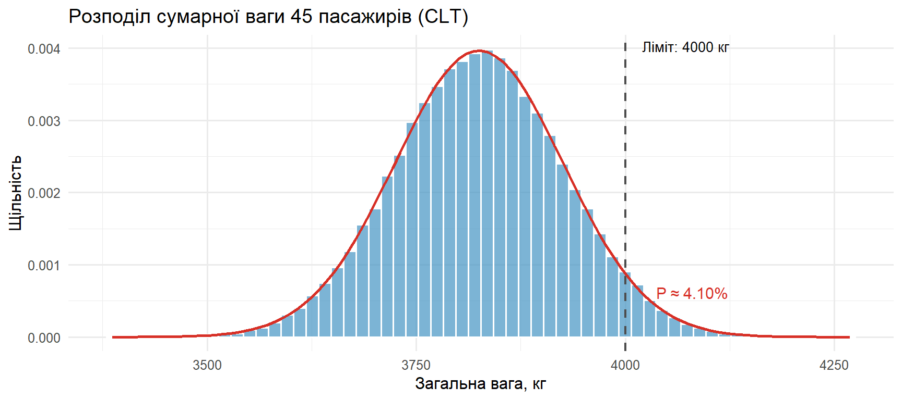
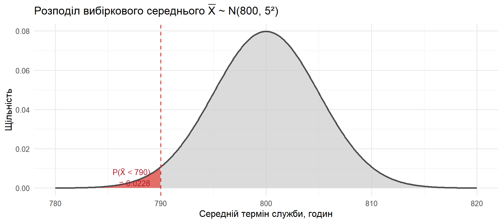
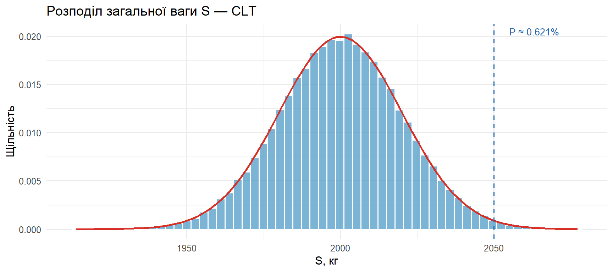
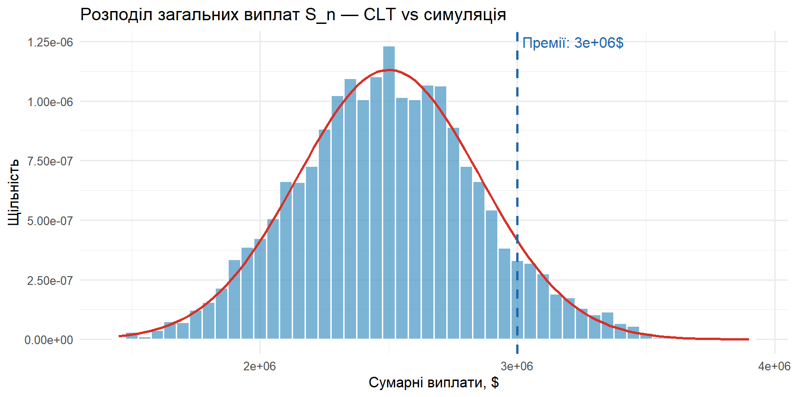
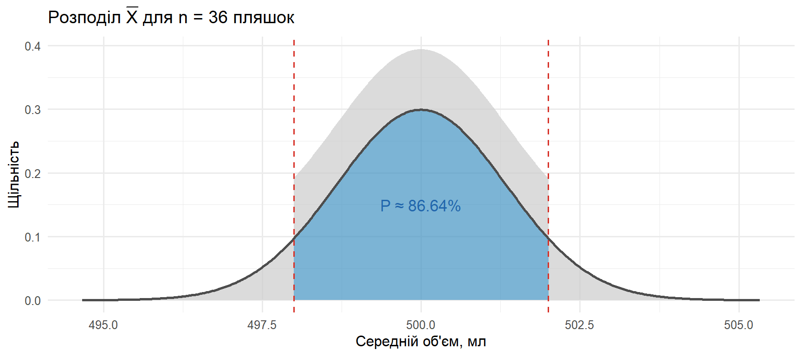
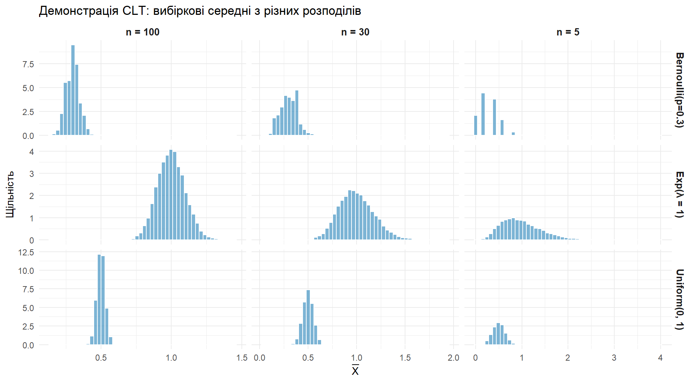

E[S_45] = 3825 кгσ(S_45) = 100.62 кгP(S_45 > 4000) = 0.0410 (4.10%)STAT250: Теорія ймовірностей та статистика
Kyiv School of Economics
2026-05-25
Ліфт має максимальну вантажопідйомність 4 000 кг. Вага кожного пасажира — i.i.d. випадкова величина з \(\mu = 85\) кг та \(\sigma = 15\) кг.
У ліфт заходять 45 пасажирів. Яка ймовірність, що їхня сумарна вага перевищить безпечний ліміт?
Підказка: використайте CLT для суми:
\[E[S_n] = n\mu, \quad \sigma_{S_n} = \sigma\sqrt{n}\]
\[P(S_n > a) = 1 - \Phi\left(\frac{a - n\mu}{\sigma\sqrt{n}}\right)\]
Крок 1. Параметри: \(n = 45\), \(\mu = 85\), \(\sigma = 15\). Оскільки \(n \geq 30\), CLT добре працює.
Крок 2. Математичне сподівання та дисперсія суми:
\[ E[S_{45}] = n\mu = 45 \times 85 = 3825 \text{ кг} \]
\[ \operatorname{Var}(S_{45}) = n\sigma^2 = 45 \times 15^2 = 10125, \quad \sigma_{S_{45}} = \sqrt{10125} \approx 100.62 \]
Крок 3. Стандартизація:
\[ P(S_{45} > 4000) = P\!\left(Z > \frac{4000 - 3825}{100.62}\right) \approx P(Z > 1.74) = 1 - \Phi(1.74) = 0.0409 \]
Висновок: ймовірність перевантаження ліфта ≈ 4.09%.
E[S_45] = 3825 кгσ(S_45) = 100.62 кгP(S_45 > 4000) = 0.0410 (4.10%)tibble(s = sim_sums) |>
ggplot(aes(x = s)) +
geom_histogram(aes(y = after_stat(density)), bins = 60,
fill = "#4393c3", color = "white", alpha = 0.7) +
stat_function(fun = dnorm, args = list(mean = mu_S, sd = sigma_S),
color = "#d73027", linewidth = 1) +
geom_vline(xintercept = limit, linetype = "dashed", color = "grey30", linewidth = 0.8) +
annotate("text", x = limit + 20, y = Inf,
label = "Ліміт: 4000 кг", vjust = 1.5, hjust = 0, size = 3.5) +
annotate("text", x = limit + 80, y = dnorm(limit, mu_S, sigma_S) * 0.7,
label = sprintf("P ≈ %.2f%%", p_overload * 100),
color = "#d73027", size = 4) +
labs(title = "Розподіл сумарної ваги 45 пасажирів (CLT)",
x = "Загальна вага, кг", y = "Щільність") +
theme_minimal(base_size = 12)
Лампочки мають середній термін служби \(\mu = 800\) годин та \(\sigma = 40\) годин. Розподіл сильно лівоскошений. Інспектор обирає вибірку з \(n = 64\) лампочок.
Яка ймовірність, що вибіркове середнє \(\bar{X}\) буде менше 790 годин?
Підказка: стандартна похибка (Standard Error):
\[\text{SE} = \frac{\sigma}{\sqrt{n}}, \quad Z = \frac{\bar{X} - \mu}{\text{SE}}\]
Незважаючи на те, що розподіл лівоскошений, \(n = 64 \geq 30\) — CLT гарантує, що \(\bar{X}\) має приблизно нормальний розподіл.
Стандартна похибка:
\[ \sigma_{\bar{X}} = \frac{\sigma}{\sqrt{n}} = \frac{40}{\sqrt{64}} = \frac{40}{8} = 5 \text{ годин} \]
Стандартизація:
\[ P(\bar{X} < 790) = P\!\left(Z < \frac{790 - 800}{5}\right) = P(Z < -2.00) = \Phi(-2.00) = 0.0228 \]
Висновок: ймовірність того, що середній термін служби 64 лампочок буде менше 790 годин — 2.28%.
SE = σ/√n = 5.0 годинZ = (790 - 800) / 5 = -2.00P(X̄ < 790) = Φ(-2.00) = 0.0228tibble(x = seq(mu - 4 * se, mu + 4 * se, length.out = 500)) |>
mutate(density = dnorm(x, mean = mu, sd = se),
region = x < x_bar) |>
ggplot(aes(x = x, y = density)) +
geom_area(aes(fill = region), alpha = 0.7, show.legend = FALSE) +
geom_line(color = "grey30", linewidth = 1) +
geom_vline(xintercept = x_bar, linetype = "dashed", color = "#d73027") +
scale_fill_manual(values = c("TRUE" = "#d73027", "FALSE" = "grey80")) +
annotate("text", x = x_bar - 1, y = dnorm(x_bar, mu, se) * 0.5,
label = sprintf("P(X̄ < 790)\n= %.4f", p),
color = "#b2182b", size = 3.5, hjust = 1) +
labs(title = expression(paste("Розподіл вибіркового середнього ", bar(X),
" ~ N(800, 5²)")),
x = "Середній термін служби, годин", y = "Щільність") +
theme_minimal(base_size = 12)
Чесна монета підкидається \(n\) разів.
Скільки підкидань потрібно, щоб з імовірністю не менше 0.95 частка «Орла» відхилялась від 0.5 не більше ніж на 0.01?
Підказка: \(\hat{p} = \frac{1}{n}\sum X_i\), \(X_i \sim \text{Bernoulli}(0.5)\).
За Чебишевим: \(P(|\hat{p} - 0.5| \geq \varepsilon) \leq \frac{\operatorname{Var}(\hat{p})}{\varepsilon^2}\).
Нехай \(\hat{p} = \frac{1}{n}\sum X_i\), \(X_i \sim \text{Bernoulli}(0.5)\).
\[ E[\hat{p}] = 0.5, \quad \operatorname{Var}(\hat{p}) = \frac{0.5 \cdot 0.5}{n} = \frac{0.25}{n} \]
За Чебишевим:
\[ P(|\hat{p} - 0.5| \geq \varepsilon) \leq \frac{\operatorname{Var}(\hat{p})}{\varepsilon^2} = \frac{0.25}{n \cdot 0.0001} = \frac{2500}{n} \]
Вимога: \(1 - \frac{2500}{n} \geq 0.95\), тобто \(\frac{2500}{n} \leq 0.05\).
\[ n \geq \frac{2500}{0.05} = 50\,000 \]
Мінімум n за Чебишевим: 50000Порівняння з нормальним наближенням (CLT):
За нормальним наближенням (CLT): 9604Емпірична перевірка:
Емпіричне P(|p̂ - 0.5| ≤ 0.01) при n = 50000: 1.0000Емпірика підтверджує, що при \(n = 50\,000\) ймовірність помітно вища від 0.95 — оцінка Чебишева груба, але завжди коректна.
Вантажівка везе 100 коробок, вага кожної — незалежна випадкова величина з \(\mu = 20\) кг та \(\sigma = 2\) кг.
Знайти ймовірність, що загальна вага перевищить 2050 кг.
Підказка: \(S = \sum_{i=1}^{100} X_i \approx \mathcal{N}(n\mu, n\sigma^2)\).
Позначимо \(S = \sum_{i=1}^{100} X_i\). За CLT:
\[ E[S] = 100 \cdot 20 = 2000, \quad \sigma_S = \sqrt{100} \cdot 2 = 20 \]
\[ S \approx \mathcal{N}(2000, 20^2) \]
Стандартизація:
\[ P(S > 2050) = P\!\left(Z > \frac{2050 - 2000}{20}\right) = P(Z > 2.5) = 1 - \Phi(2.5) \approx 0.00621 \]
Висновок: ймовірність перевантаження ≈ 0.62%.
E[S] = 2000, σ(S) = 20.0P(S > 2050) = 0.00621Перевірка симуляцією:
tibble(s = sim) |>
ggplot(aes(x = s)) +
geom_histogram(aes(y = after_stat(density)), bins = 60,
fill = "#4393c3", color = "white", alpha = 0.7) +
stat_function(fun = dnorm, args = list(mean = mu_S, sd = sigma_S),
color = "#d73027", linewidth = 1) +
geom_vline(xintercept = 2050, linetype = "dashed", color = "#2166ac") +
annotate("text", x = 2055, y = Inf,
label = sprintf("P ≈ %.3f%%", p_overload * 100),
vjust = 1.5, hjust = 0, color = "#2166ac", size = 3.5) +
labs(title = "Розподіл загальної ваги S — CLT",
x = "S, кг", y = "Щільність") +
theme_minimal(base_size = 12)
Страхова компанія: \(n = 10\,000\) творців. На одного: з імовірністю 0.995 — нуль виплат, з 0.005 — виплата 50 000 $. Премія: 300 $ з кожного.
Очікувана виплата на одну поліс:
\[ E[X] = 0 \cdot 0.995 + 50000 \cdot 0.005 = 250 \]
Дисперсія:
\[ E[X^2] = 50000^2 \cdot 0.005 = 12\,500\,000 \]
\[ \operatorname{Var}(X) = 12\,500\,000 - 250^2 = 12\,437\,500, \quad \sigma \approx 3526.68 \]
Розподіл \(S_n\) за CLT (\(n = 10\,000\)):
\[ E[S_n] = 10\,000 \cdot 250 = 2\,500\,000, \quad \sigma_{S_n} = 100 \cdot 3526.68 = 352\,668 \]
Загальні премії: \(R = 10\,000 \cdot 300 = 3\,000\,000\) $.
Ймовірність збитку:
\[ P(S_n > 3\,000\,000) = P\!\left(Z > \frac{3\,000\,000 - 2\,500\,000}{352\,668}\right) = P(Z > 1.418) \approx 0.078 \]
Висновок: при поточних тарифах ризик чистого збитку ≈ 7.8% — досить високий для страхового бізнесу.
n <- 10000
p_claim <- 0.005
payout <- 50000
premium <- 300
EX <- p_claim * payout
EX2 <- p_claim * payout^2
VarX <- EX2 - EX^2
sdX <- sqrt(VarX)
mu_S <- n * EX
sigma_S <- sqrt(n) * sdX
revenue <- n * premium
p_loss <- 1 - pnorm(revenue, mu_S, sigma_S)
cat(sprintf("E[X] = %.2f, σ(X) = %.2f\n", EX, sdX))E[X] = 250.00, σ(X) = 3526.68E[S_n] = 2500000, σ(S_n) = 352668Премії: 3000000, P(збиток) = 0.0781tibble(s = sim_total) |>
ggplot(aes(x = s)) +
geom_histogram(aes(y = after_stat(density)), bins = 50,
fill = "#4393c3", color = "white", alpha = 0.7) +
stat_function(fun = dnorm, args = list(mean = mu_S, sd = sigma_S),
color = "#d73027", linewidth = 1) +
geom_vline(xintercept = revenue, linetype = "dashed",
color = "#2166ac", linewidth = 1) +
annotate("text", x = revenue, y = Inf,
label = sprintf("Премії: %s$", format(revenue, big.mark = ",")),
color = "#2166ac", vjust = 1.5, hjust = -0.05) +
labs(title = "Розподіл загальних виплат S_n — CLT vs симуляція",
x = "Сумарні виплати, $", y = "Щільність") +
theme_minimal(base_size = 12)
Автомат наповнює пляшки з напоєм: \(\mu = 500\) мл, \(\sigma = 8\) мл. Інспектор бере вибірку з \(n = 36\) пляшок.
Яка ймовірність, що середній об’єм у вибірці буде між 498 та 502 мл?
Підказка:
\[P(a < \bar{X} < b) = \Phi\left(\frac{b - \mu}{\sigma/\sqrt{n}}\right) - \Phi\left(\frac{a - \mu}{\sigma/\sqrt{n}}\right)\]
За CLT: \(\bar{X} \approx \mathcal{N}\!\left(\mu, \frac{\sigma^2}{n}\right) = \mathcal{N}\!\left(500, \frac{64}{36}\right)\).
Стандартна похибка:
\[ \text{SE} = \frac{\sigma}{\sqrt{n}} = \frac{8}{\sqrt{36}} = \frac{8}{6} \approx 1.333 \text{ мл} \]
Стандартизація:
\[ P(498 < \bar{X} < 502) = P\!\left(\frac{498 - 500}{1.333} < Z < \frac{502 - 500}{1.333}\right) = P(-1.5 < Z < 1.5) \]
\[ = \Phi(1.5) - \Phi(-1.5) = 0.9332 - 0.0668 = 0.8664 \]
Висновок: ≈ 86.64%.
tibble(x = seq(mu - 4 * se, mu + 4 * se, length.out = 500)) |>
mutate(density = dnorm(x, mu, se),
in_band = x >= 498 & x <= 502) |>
ggplot(aes(x = x, y = density)) +
geom_area(aes(fill = in_band), alpha = 0.7, show.legend = FALSE) +
geom_line(color = "grey30", linewidth = 1) +
geom_vline(xintercept = c(498, 502), linetype = "dashed", color = "#d73027") +
scale_fill_manual(values = c("TRUE" = "#4393c3", "FALSE" = "grey80")) +
annotate("text", x = 500, y = dnorm(500, mu, se) * 0.5,
label = sprintf("P ≈ %.2f%%", p_in_range * 100),
color = "#2166ac", size = 4.5) +
labs(title = expression(paste("Розподіл ", bar(X), " для n = 36 пляшок")),
x = "Середній об'єм, мл", y = "Щільність") +
theme_minimal(base_size = 12)
Продемонструйте CLT у R:
Підказка: використайте replicate(), facet_grid().
set.seed(42)
n_sim <- 10000
sample_ns <- c(5, 30, 100)
distributions <- list(
"Exp(λ = 1)" = function(n) rexp(n, rate = 1),
"Uniform(0, 1)" = function(n) runif(n, 0, 1),
"Bernoulli(p=0.3)" = function(n) rbinom(n, 1, 0.3)
)
sim_data <- expand_grid(
dist_name = names(distributions),
n = sample_ns
) |>
mutate(
means = map2(dist_name, n, \(d, nn) {
gen <- distributions[[d]]
replicate(n_sim, mean(gen(nn)))
})
) |>
unnest(means) |>
mutate(n_label = paste("n =", n))
При збільшенні \(n\) розподіл вибіркового середнього стає все більш «нормальним», незалежно від вихідного розподілу.
| № | Тип задачі | Інструмент | Ключовий результат |
|---|---|---|---|
| 1 | CLT для суми (ліфт) | pnorm |
\(\approx 4.09\%\) перевантаження |
| 2 | CLT для середнього (лампочки) | pnorm |
\(P(\bar{X} < 790) \approx 2.28\%\) |
| 3 | Чебишев → \(n\) | арифметика | \(n \geq 50\,000\) |
| 4 | CLT — сума (вантажівка) | pnorm, replicate |
\(\approx 0.62\%\) |
| 5 | CLT — портфель (страхування) | pnorm, replicate |
\(\approx 7.8\%\) ризик збитку |
| 8 | CLT для середнього (напої) | pnorm |
\(P \approx 86.64\%\) |
| 9 | Візуальна демонстрація CLT | replicate, facet_grid |
CLT працює для будь-якого розподілу |
STAT250 · KSE · Практичне заняття 5